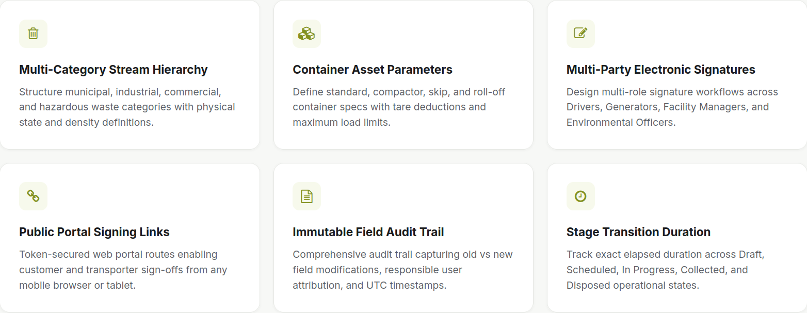
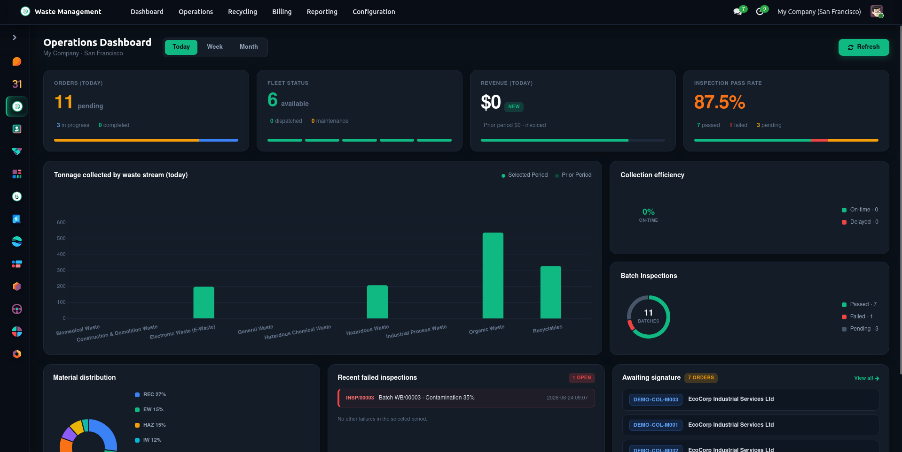
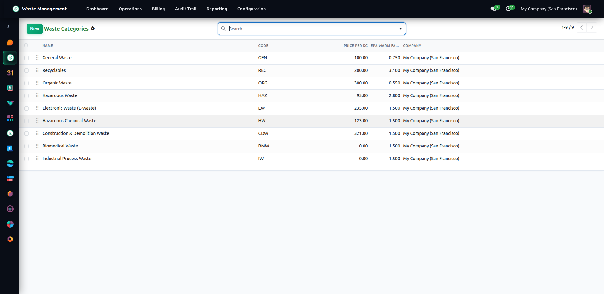
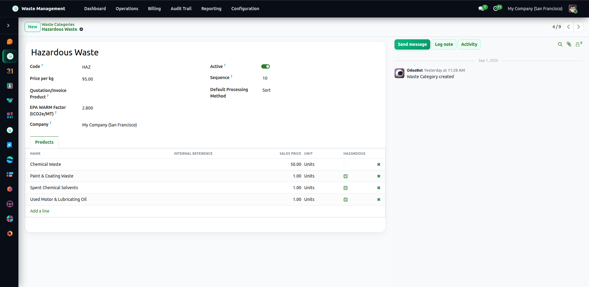
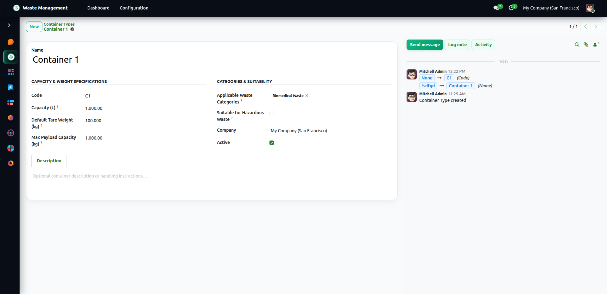
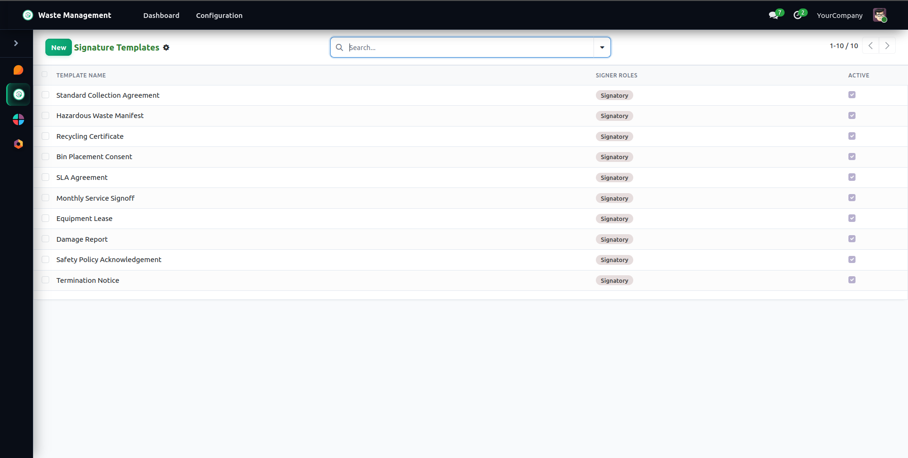
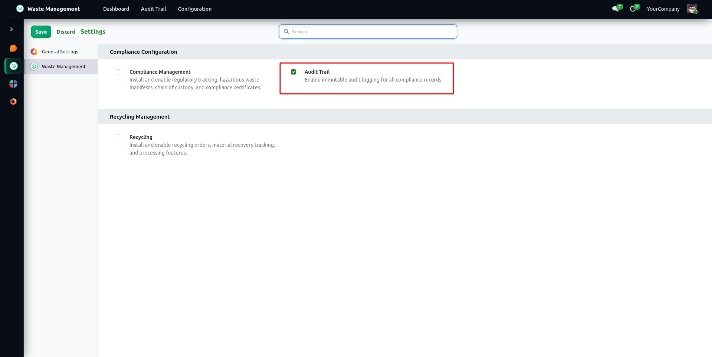
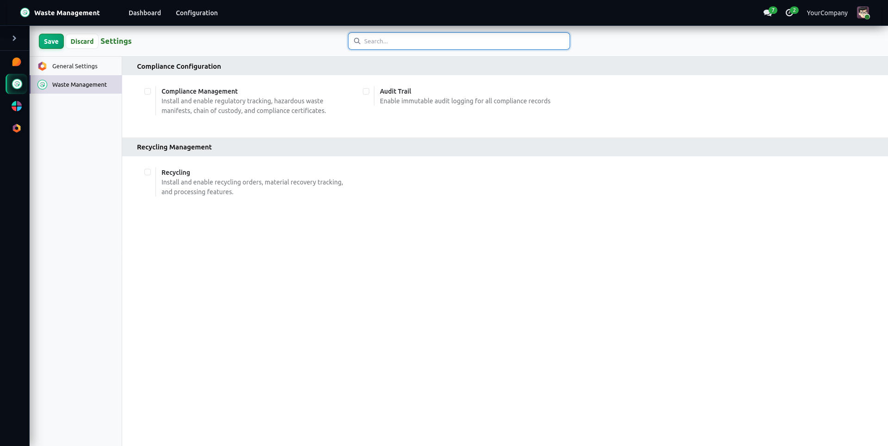

<!-- =================================================================
     Waste Management Base — Odoo 19 Community description page
     ================================================================= -->
<section class="oe_container" style="background-color:#F7F8F6; color:#1A1B1D; font-family:-apple-system,BlinkMacSystemFont,'Segoe UI',Helvetica,Arial,sans-serif; font-size:16px; line-height:1.6; padding:0; margin:0;">

  <div style="width:100%; max-width:1240px; margin:0 auto; padding:28px 16px 80px;">

    <!-- ============ COMPATIBILITY BAR ============ -->
    <table cellpadding="0" cellspacing="0" border="0" style="width:100%; table-layout:fixed; border-collapse:collapse; background-color:#FFFFFF; border:1px solid #E4E6E2; border-radius:14px; margin-bottom:24px;">
      <tr>
        <td style="vertical-align:middle; padding:16px 24px; width:30%;">
          <span style="font-weight:800; font-size:12px; text-transform:uppercase; letter-spacing:0.1em; color:#8B9099; margin-right:8px;">Supports</span>
          <span style="padding:6px 14px; border-radius:20px; font-weight:700; font-size:13px; background-color:#1A1B1D; color:#FFFFFF; border:1px solid #1A1B1D; display:inline-block;">Community</span>
        </td>
        <td style="vertical-align:middle; padding:16px 24px; width:70%; text-align:right;">
          <span style="font-weight:800; font-size:12px; text-transform:uppercase; letter-spacing:0.1em; color:#8B9099; margin-right:8px;">Availability</span>
          <span style="padding:6px 14px; border-radius:20px; font-weight:700; font-size:13px; background-color:#FFFFFF; border:1px solid #E4E6E2; color:#1A1B1D; display:inline-block; margin:3px 0 3px 4px;">
            <i class="fa fa-check-circle" style="color:#2F6B4F; margin-right:6px;"></i>On Premise
          </span>
          <span style="padding:6px 14px; border-radius:20px; font-weight:700; font-size:13px; background-color:#FFFFFF; border:1px solid #E4E6E2; color:#8B9099; display:inline-block; margin:3px 0 3px 4px;">
            <i class="fa fa-times-circle" style="color:#B4B8B0; margin-right:6px;"></i>Odoo.sh
          </span>
        </td>
      </tr>
    </table>

    <!-- ============ HERO BANNER ============ -->
    <div style="background-color:#F3F8EC; border:1px solid #E4E6E2; border-radius:20px; padding:48px 40px; margin-bottom:32px;">
      <p style="font-size:13px; font-weight:800; letter-spacing:0.16em; text-transform:uppercase; color:#82901F; margin:0 0 12px;">
        <span style="display:inline-block; width:22px; height:2px; background-color:#B5C235; vertical-align:middle; margin-right:10px;"></span>
        Odoo 19 &middot; Waste Management Base
      </p>
      <h1 style="font-size:42px; font-weight:800; color:#1A1B1D; margin:0 0 18px; line-height:1.15; letter-spacing:-0.02em; max-width:900px;">
        Waste Management Base: Master Data, Digital Signatures &amp; Compliance Audit Framework
      </h1>
      <p style="font-size:17px; color:#5C6066; margin:0 0 28px; line-height:1.6; max-width:820px;">
        The foundational architecture for modern waste management operations &mdash; unifying multi-category stream
        classifications, container asset parameters, regulatory compliance codes, multi-party electronic signatures,
        and a field-level audit trail with write-protected log records in Odoo 19.
      </p>
      <div>
        <a href="mailto:odoo@cybrosys.com" style="display:inline-block; font-size:15px; font-weight:700; text-decoration:none; padding:13px 24px; border-radius:14px; background-color:#B5C235; color:#1A1B1D; border:1px solid #A2AF2C; margin:4px 8px 4px 0;">
          <i class="fa fa-envelope" style="margin-right:9px;"></i>Email Us
        </a>
        <a href="https://teams.microsoft.com/l/chat/0/0?users=odoo@cybrosys.com" style="display:inline-block; font-size:15px; font-weight:700; text-decoration:none; padding:13px 24px; border-radius:14px; background-color:#FFFFFF; color:#1A1B1D; border:1px solid #E4E6E2; margin:4px 8px 4px 0;">
          <i class="fa fa-users" style="color:#5059C9; margin-right:9px;"></i>Teams
        </a>
        <a href="https://wa.me/919074270811" target="_blank" style="display:inline-block; font-size:15px; font-weight:700; text-decoration:none; padding:13px 24px; border-radius:14px; background-color:#FFFFFF; color:#1A1B1D; border:1px solid #E4E6E2; margin:4px 8px 4px 0;">
          <i class="fa fa-whatsapp" style="color:#25D366; margin-right:9px;"></i>+91 9074270811
        </a>
      </div>
    </div>

    <!-- ============ WORKFLOW PIPELINE ============ -->
    <div style="background-color:#FFFFFF; border:1px solid #E4E6E2; border-radius:20px; padding:44px 36px; margin-bottom:32px;">
      <div style="text-align:center; margin-bottom:36px;">
        <p style="font-size:12px; font-weight:800; letter-spacing:0.18em; text-transform:uppercase; color:#82901F; margin:0 0 12px;">Operational Lifecycle</p>
        <h2 style="font-size:32px; font-weight:800; color:#1A1B1D; margin:0 0 12px; line-height:1.2;">From Taxonomy Setup to Portal Signing</h2>
        <p style="font-size:17px; color:#5C6066; max-width:700px; margin:0 auto; line-height:1.6;">How master data, container parameters, and signing links govern downstream waste management operations.</p>
      </div>

      <table cellpadding="0" cellspacing="0" border="0" style="width:100%; table-layout:fixed; border-collapse:separate; border-spacing:12px;">
        <tr>
          <td style="width:33.33%; vertical-align:top; border-top:2px solid #E4E6E2; padding-top:14px; word-wrap:break-word;">
            <div style="font-size:13px; font-weight:800; color:#8B9099; margin-bottom:6px;">01</div>
            <h3 style="font-size:16px; font-weight:700; color:#1A1B1D; margin:0 0 6px;">Category Setup</h3>
            <p style="font-size:14px; color:#5C6066; margin:0; line-height:1.5;">Define waste streams with a default processing method, price per kg, and EPA WARM factor.</p>
          </td>
          <td style="width:33.33%; vertical-align:top; border-top:2px solid #E4E6E2; padding-top:14px; word-wrap:break-word;">
            <div style="font-size:13px; font-weight:800; color:#8B9099; margin-bottom:6px;">02</div>
            <h3 style="font-size:16px; font-weight:700; color:#1A1B1D; margin:0 0 6px;">Material Catalog</h3>
            <p style="font-size:14px; color:#5C6066; margin:0; line-height:1.5;">Catalog materials linked to waste categories with hazardous and recyclable flags and compliance codes.</p>
          </td>
          <td style="width:33.33%; vertical-align:top; border-top:2px solid #E4E6E2; padding-top:14px; word-wrap:break-word;">
            <div style="font-size:13px; font-weight:800; color:#8B9099; margin-bottom:6px;">03</div>
            <h3 style="font-size:16px; font-weight:700; color:#1A1B1D; margin:0 0 6px;">Container Specs</h3>
            <p style="font-size:14px; color:#5C6066; margin:0; line-height:1.5;">Establish container types with volume in litres, max payload, and default tare weight.</p>
          </td>
        </tr>
        <tr>
          <td style="width:33.33%; vertical-align:top; border-top:2px solid #E4E6E2; padding-top:14px; word-wrap:break-word;">
            <div style="font-size:13px; font-weight:800; color:#8B9099; margin-bottom:6px;">04</div>
            <h3 style="font-size:16px; font-weight:700; color:#1A1B1D; margin:0 0 6px;">Sign Template</h3>
            <p style="font-size:14px; color:#5C6066; margin:0; line-height:1.5;">Upload a PDF and place signature and data fields for each signer role in the designer.</p>
          </td>
          <td style="width:33.33%; vertical-align:top; border-top:2px solid #E4E6E2; padding-top:14px; word-wrap:break-word;">
            <div style="font-size:13px; font-weight:800; color:#8B9099; margin-bottom:6px;">05</div>
            <h3 style="font-size:16px; font-weight:700; color:#1A1B1D; margin:0 0 6px;">Portal Signing</h3>
            <p style="font-size:14px; color:#5C6066; margin:0; line-height:1.5;">Dispatch secure token links for touch/stylus signing on mobile devices and portals.</p>
          </td>
          <td style="width:33.33%; vertical-align:top; border-top:2px solid #E4E6E2; padding-top:14px; word-wrap:break-word;">
            <div style="font-size:13px; font-weight:800; color:#8B9099; margin-bottom:6px;">06</div>
            <h3 style="font-size:16px; font-weight:700; color:#1A1B1D; margin:0 0 6px;">Audit Logging</h3>
            <p style="font-size:14px; color:#5C6066; margin:0; line-height:1.5;">Log record creation, changes, deletions, and status transitions with old and new values.</p>
          </td>
        </tr>
      </table>
    </div>

    <!-- ============ CORE CAPABILITIES ============ -->
    <div style="margin-bottom:32px;">
      <div style="text-align:center; margin-bottom:28px;">
        <p style="font-size:12px; font-weight:800; letter-spacing:0.18em; text-transform:uppercase; color:#82901F; margin:0 0 12px;">Core Capabilities</p>
        <h2 style="font-size:32px; font-weight:800; color:#1A1B1D; margin:0; line-height:1.2;">Enterprise-Grade Foundation for Waste Operations</h2>
      </div>
      <div style="text-align:center;">
        
      </div>
    </div>

    <!-- ============ TABS ============ -->
    <style>
      section.oe_container .nav-tabs { border:none !important; }
      section.oe_container .nav-tabs .nav-link.active { background:#82901F !important; color:#fff !important; border-radius:24px !important; box-shadow:0 4px 12px rgba(130,144,31,0.28) !important; }
      section.oe_container input[type="radio"].wm-tab-input { display:none !important; }
      section.oe_container .tab-pane { display:none; }
      section.oe_container .tab-pane.active { display:block !important; }
      #wm-ss-radio:checked~.tab-content #wm-screenshots,#wm-ft-radio:checked~.tab-content #wm-features,#wm-fq-radio:checked~.tab-content #wm-faqs,#wm-rl-radio:checked~.tab-content #wm-releases { display:block !important; }
      #wm-ft-radio:checked~.tab-content #wm-screenshots.active,#wm-fq-radio:checked~.tab-content #wm-screenshots.active,#wm-rl-radio:checked~.tab-content #wm-screenshots.active { display:none !important; }
      #wm-ss-radio:checked~div ul.nav-tabs #wm-screenshots-tab,#wm-ft-radio:checked~div ul.nav-tabs #wm-features-tab,#wm-fq-radio:checked~div ul.nav-tabs #wm-faqs-tab,#wm-rl-radio:checked~div ul.nav-tabs #wm-releases-tab { background:#82901F !important; color:#fff !important; border-radius:24px !important; box-shadow:0 4px 12px rgba(130,144,31,0.28) !important; }
      #wm-ft-radio:checked~div ul.nav-tabs #wm-screenshots-tab.active,#wm-fq-radio:checked~div ul.nav-tabs #wm-screenshots-tab.active,#wm-rl-radio:checked~div ul.nav-tabs #wm-screenshots-tab.active { background:transparent !important; color:#5C6066 !important; box-shadow:none !important; border-radius:24px !important; }
    </style>

    <div style="background-color:#FFFFFF; border:1px solid #E4E6E2; border-radius:20px; padding:40px 36px; margin-bottom:32px;">
      <input type="radio" id="wm-ss-radio" name="wm-tabs" class="wm-tab-input" checked style="display:none" />
      <input type="radio" id="wm-ft-radio" name="wm-tabs" class="wm-tab-input" style="display:none" />
      <input type="radio" id="wm-fq-radio" name="wm-tabs" class="wm-tab-input" style="display:none" />
      <input type="radio" id="wm-rl-radio" name="wm-tabs" class="wm-tab-input" style="display:none" />

      <div style="text-align:center; margin-bottom:2rem;"><ul class="nav nav-tabs" id="wmBaseTab" role="tablist" style="border:none; background:#F3F4EE; border-radius:30px; padding:6px; display:inline-flex; list-style:none; margin:0 auto; box-shadow:inset 0 2px 4px rgba(26,27,29,0.05);">
        <li class="nav-item" role="presentation" style="margin:0;"><label class="nav-link active" id="wm-screenshots-tab" data-bs-toggle="tab" data-toggle="tab" href="#wm-screenshots" for="wm-ss-radio" role="tab" style="text-decoration:none; display:inline-block; border-radius:24px; margin:0 3px; cursor:pointer; padding:11px 26px; font-weight:700; font-size:14px; color:#5C6066;">Screenshots</label></li>
        <li class="nav-item" role="presentation" style="margin:0;"><label class="nav-link" id="wm-features-tab" data-bs-toggle="tab" data-toggle="tab" href="#wm-features" for="wm-ft-radio" role="tab" style="text-decoration:none; display:inline-block; border-radius:24px; margin:0 3px; cursor:pointer; padding:11px 26px; font-weight:700; font-size:14px; color:#5C6066;">Features</label></li>
        <li class="nav-item" role="presentation" style="margin:0;"><label class="nav-link" id="wm-faqs-tab" data-bs-toggle="tab" data-toggle="tab" href="#wm-faqs" for="wm-fq-radio" role="tab" style="text-decoration:none; display:inline-block; border-radius:24px; margin:0 3px; cursor:pointer; padding:11px 26px; font-weight:700; font-size:14px; color:#5C6066;">FAQs</label></li>
        <li class="nav-item" role="presentation" style="margin:0;"><label class="nav-link" id="wm-releases-tab" data-bs-toggle="tab" data-toggle="tab" href="#wm-releases" for="wm-rl-radio" role="tab" style="text-decoration:none; display:inline-block; border-radius:24px; margin:0 3px; cursor:pointer; padding:11px 26px; font-weight:700; font-size:14px; color:#5C6066;">Releases</label></li>
      </ul></div>

      <div class="tab-content" id="wmBaseTabContent">

        <!-- SCREENSHOTS -->
        <div class="tab-pane fade show active" id="wm-screenshots" role="tabpanel" aria-labelledby="wm-screenshots-tab"><div style="padding-top:1rem;">
          <div style="border:1px solid #E4E6E2; border-radius:20px; overflow:hidden; background-color:#FFFFFF; margin-bottom:40px;">
            <table cellpadding="0" cellspacing="0" border="0" style="width:100%; table-layout:fixed; border-collapse:collapse; background-color:#F7F8F6; border-bottom:1px solid #E4E6E2;"><tr>
              <td style="padding:14px 24px; vertical-align:middle; width:50%;"><span style="display:inline-block; width:10px; height:10px; border-radius:50%; background-color:#D0D3CD; margin-right:5px;"></span><span style="display:inline-block; width:10px; height:10px; border-radius:50%; background-color:#D0D3CD; margin-right:5px;"></span><span style="display:inline-block; width:10px; height:10px; border-radius:50%; background-color:#D0D3CD;"></span></td>
              <td style="padding:14px 24px; vertical-align:middle; width:50%; text-align:right; font-size:14px; font-weight:600; color:#5C6066;"><i class="fa fa-bar-chart" style="color:#82901F; margin-right:8px;"></i>Overview Dashboard</td>
            </tr></table>
            
            <div style="padding:24px 30px;"><h4 style="font-size:20px; font-weight:700; color:#1A1B1D; margin:0 0 8px;"><span style="font-size:14px; font-weight:800; color:#82901F; margin-right:10px;">01</span>Operations Command &amp; Overview Dashboard</h4><p style="color:#5C6066; margin:0; line-height:1.6; font-size:15px;">Visibility into collection orders (pending, in progress, completed), tonnage collected by waste stream, material distribution, fleet status, inspection pass rate, revenue, and orders awaiting signature. Figures come from the Waste Management modules you have installed.</p></div>
          </div>
          <div style="border:1px solid #E4E6E2; border-radius:20px; overflow:hidden; background-color:#FFFFFF; margin-bottom:40px;">
            <table cellpadding="0" cellspacing="0" border="0" style="width:100%; table-layout:fixed; border-collapse:collapse; background-color:#F7F8F6; border-bottom:1px solid #E4E6E2;"><tr>
              <td style="padding:14px 24px; vertical-align:middle; width:50%;"><span style="display:inline-block; width:10px; height:10px; border-radius:50%; background-color:#D0D3CD; margin-right:5px;"></span><span style="display:inline-block; width:10px; height:10px; border-radius:50%; background-color:#D0D3CD; margin-right:5px;"></span><span style="display:inline-block; width:10px; height:10px; border-radius:50%; background-color:#D0D3CD;"></span></td>
              <td style="padding:14px 24px; vertical-align:middle; width:50%; text-align:right; font-size:14px; font-weight:600; color:#5C6066;"><i class="fa fa-trash-o" style="color:#82901F; margin-right:8px;"></i>Waste Categories</td>
            </tr></table>
            
            <div style="padding:24px 30px;"><h4 style="font-size:20px; font-weight:700; color:#1A1B1D; margin:0 0 8px;"><span style="font-size:14px; font-weight:800; color:#82901F; margin-right:10px;">02</span>Waste Categories Master Data &amp; Classification</h4><p style="color:#5C6066; margin:0; line-height:1.6; font-size:15px;">Configure waste categories with a default processing method, price per kg, EPA WARM factor, a quotation/invoice service product, and chatter tracking.</p></div>
          </div>
          <div style="border:1px solid #E4E6E2; border-radius:20px; overflow:hidden; background-color:#FFFFFF; margin-bottom:40px;">
            <table cellpadding="0" cellspacing="0" border="0" style="width:100%; table-layout:fixed; border-collapse:collapse; background-color:#F7F8F6; border-bottom:1px solid #E4E6E2;"><tr>
              <td style="padding:14px 24px; vertical-align:middle; width:50%;"><span style="display:inline-block; width:10px; height:10px; border-radius:50%; background-color:#D0D3CD; margin-right:5px;"></span><span style="display:inline-block; width:10px; height:10px; border-radius:50%; background-color:#D0D3CD; margin-right:5px;"></span><span style="display:inline-block; width:10px; height:10px; border-radius:50%; background-color:#D0D3CD;"></span></td>
              <td style="padding:14px 24px; vertical-align:middle; width:50%; text-align:right; font-size:14px; font-weight:600; color:#5C6066;"><i class="fa fa-tags" style="color:#82901F; margin-right:8px;"></i>Materials Catalog</td>
            </tr></table>
            
            <div style="padding:24px 30px;"><h4 style="font-size:20px; font-weight:700; color:#1A1B1D; margin:0 0 8px;"><span style="font-size:14px; font-weight:800; color:#82901F; margin-right:10px;">03</span>Waste Materials Catalog &amp; Environmental Attributes</h4><p style="color:#5C6066; margin:0; line-height:1.6; font-size:15px;">Catalog recyclable and hazardous waste materials linked to one or more waste categories, with compliance codes and hazardous and recyclable flags.</p></div>
          </div>
          <div style="border:1px solid #E4E6E2; border-radius:20px; overflow:hidden; background-color:#FFFFFF; margin-bottom:40px;">
            <table cellpadding="0" cellspacing="0" border="0" style="width:100%; table-layout:fixed; border-collapse:collapse; background-color:#F7F8F6; border-bottom:1px solid #E4E6E2;"><tr>
              <td style="padding:14px 24px; vertical-align:middle; width:50%;"><span style="display:inline-block; width:10px; height:10px; border-radius:50%; background-color:#D0D3CD; margin-right:5px;"></span><span style="display:inline-block; width:10px; height:10px; border-radius:50%; background-color:#D0D3CD; margin-right:5px;"></span><span style="display:inline-block; width:10px; height:10px; border-radius:50%; background-color:#D0D3CD;"></span></td>
              <td style="padding:14px 24px; vertical-align:middle; width:50%; text-align:right; font-size:14px; font-weight:600; color:#5C6066;"><i class="fa fa-cubes" style="color:#82901F; margin-right:8px;"></i>Container Types</td>
            </tr></table>
            
            <div style="padding:24px 30px;"><h4 style="font-size:20px; font-weight:700; color:#1A1B1D; margin:0 0 8px;"><span style="font-size:14px; font-weight:800; color:#82901F; margin-right:10px;">04</span>Container Types &amp; Volumetric Specifications</h4><p style="color:#5C6066; margin:0; line-height:1.6; font-size:15px;">Manage container types with volume capacity in litres, maximum payload, default tare weight, approved waste categories, and a hazardous-waste suitability flag.</p></div>
          </div>
          <div style="border:1px solid #E4E6E2; border-radius:20px; overflow:hidden; background-color:#FFFFFF; margin-bottom:40px;">
            <table cellpadding="0" cellspacing="0" border="0" style="width:100%; table-layout:fixed; border-collapse:collapse; background-color:#F7F8F6; border-bottom:1px solid #E4E6E2;"><tr>
              <td style="padding:14px 24px; vertical-align:middle; width:50%;"><span style="display:inline-block; width:10px; height:10px; border-radius:50%; background-color:#D0D3CD; margin-right:5px;"></span><span style="display:inline-block; width:10px; height:10px; border-radius:50%; background-color:#D0D3CD; margin-right:5px;"></span><span style="display:inline-block; width:10px; height:10px; border-radius:50%; background-color:#D0D3CD;"></span></td>
              <td style="padding:14px 24px; vertical-align:middle; width:50%; text-align:right; font-size:14px; font-weight:600; color:#5C6066;"><i class="fa fa-pencil-square-o" style="color:#82901F; margin-right:8px;"></i>Signature Templates</td>
            </tr></table>
            
            <div style="padding:24px 30px;"><h4 style="font-size:20px; font-weight:700; color:#1A1B1D; margin:0 0 8px;"><span style="font-size:14px; font-weight:800; color:#82901F; margin-right:10px;">05</span>Digital Signature Template &amp; Multi-Role Builder</h4><p style="color:#5C6066; margin:0; line-height:1.6; font-size:15px;">Design multi-party electronic signature workflows: define signer roles (for example Driver, Customer, Inspector), upload a PDF, assign fields to roles, and attach the signed PDF to the linked collection order, contract, or inspection.</p></div>
          </div>
          <div style="border:1px solid #E4E6E2; border-radius:20px; overflow:hidden; background-color:#FFFFFF; margin-bottom:40px;">
            <table cellpadding="0" cellspacing="0" border="0" style="width:100%; table-layout:fixed; border-collapse:collapse; background-color:#F7F8F6; border-bottom:1px solid #E4E6E2;"><tr>
              <td style="padding:14px 24px; vertical-align:middle; width:50%;"><span style="display:inline-block; width:10px; height:10px; border-radius:50%; background-color:#D0D3CD; margin-right:5px;"></span><span style="display:inline-block; width:10px; height:10px; border-radius:50%; background-color:#D0D3CD; margin-right:5px;"></span><span style="display:inline-block; width:10px; height:10px; border-radius:50%; background-color:#D0D3CD;"></span></td>
              <td style="padding:14px 24px; vertical-align:middle; width:50%; text-align:right; font-size:14px; font-weight:600; color:#5C6066;"><i class="fa fa-file-text-o" style="color:#82901F; margin-right:8px;"></i>Audit Trail</td>
            </tr></table>
            
            <div style="padding:24px 30px;"><h4 style="font-size:20px; font-weight:700; color:#1A1B1D; margin:0 0 8px;"><span style="font-size:14px; font-weight:800; color:#82901F; margin-right:10px;">06</span>Field-Level Audit Trail &amp; State Transitions</h4><p style="color:#5C6066; margin:0; line-height:1.6; font-size:15px;">Audit logging of record creation, field changes (Old Value &rarr; New Value), and deletions, with the responsible user and timestamp, plus a status transition log with previous state, new state, and reason. Log records cannot be edited or deleted from the application.</p></div>
          </div>
          <div style="border:1px solid #E4E6E2; border-radius:20px; overflow:hidden; background-color:#FFFFFF;">
            <table cellpadding="0" cellspacing="0" border="0" style="width:100%; table-layout:fixed; border-collapse:collapse; background-color:#F7F8F6; border-bottom:1px solid #E4E6E2;"><tr>
              <td style="padding:14px 24px; vertical-align:middle; width:50%;"><span style="display:inline-block; width:10px; height:10px; border-radius:50%; background-color:#D0D3CD; margin-right:5px;"></span><span style="display:inline-block; width:10px; height:10px; border-radius:50%; background-color:#D0D3CD; margin-right:5px;"></span><span style="display:inline-block; width:10px; height:10px; border-radius:50%; background-color:#D0D3CD;"></span></td>
              <td style="padding:14px 24px; vertical-align:middle; width:50%; text-align:right; font-size:14px; font-weight:600; color:#5C6066;"><i class="fa fa-cog" style="color:#82901F; margin-right:8px;"></i>Configuration</td>
            </tr></table>
            
            <div style="padding:24px 30px;"><h4 style="font-size:20px; font-weight:700; color:#1A1B1D; margin:0 0 8px;"><span style="font-size:14px; font-weight:800; color:#82901F; margin-right:10px;">07</span>Waste Management Base Configuration Settings</h4><p style="color:#5C6066; margin:0; line-height:1.6; font-size:15px;">Settings panel to switch the audit trail on or off and to install the optional Compliance, Recycling, Subscription, and Driver Mobile App modules.</p></div>
          </div>
        </div></div>

        <!-- FEATURES -->
        <div class="tab-pane fade" id="wm-features" role="tabpanel" aria-labelledby="wm-features-tab"><div style="padding-top:1rem;"><table cellpadding="0" cellspacing="0" border="0" style="width:100%; table-layout:fixed; border-collapse:separate; border-spacing:10px;"><tr>
          <td style="width:50%; vertical-align:top; background-color:#F7F8F6; border:1px solid #E4E6E2; border-radius:14px; padding:22px; word-wrap:break-word;"><div style="font-weight:800; font-size:13px; letter-spacing:0.1em; color:#82901F; margin-bottom:10px;">01</div><h4 style="font-size:17px; font-weight:700; color:#1A1B1D; margin:0 0 8px;">Centralized Master Data Registry</h4><p style="font-size:15px; color:#5C6066; margin:0; line-height:1.55;">Unified database for waste categories, raw materials, container specifications, and regulatory compliance codes.</p></td>
          <td style="width:50%; vertical-align:top; background-color:#F7F8F6; border:1px solid #E4E6E2; border-radius:14px; padding:22px; word-wrap:break-word;"><div style="font-weight:800; font-size:13px; letter-spacing:0.1em; color:#82901F; margin-bottom:10px;">02</div><h4 style="font-size:17px; font-weight:700; color:#1A1B1D; margin:0 0 8px;">Multi-Role Digital Signatures</h4><p style="font-size:15px; color:#5C6066; margin:0; line-height:1.55;">Build signature templates with multiple signer roles, a unique access link per signer, and portal signing on any device.</p></td>
        </tr><tr>
          <td style="width:50%; vertical-align:top; background-color:#F7F8F6; border:1px solid #E4E6E2; border-radius:14px; padding:22px; word-wrap:break-word;"><div style="font-weight:800; font-size:13px; letter-spacing:0.1em; color:#82901F; margin-bottom:10px;">03</div><h4 style="font-size:17px; font-weight:700; color:#1A1B1D; margin:0 0 8px;">Field-Level Audit Logging</h4><p style="font-size:15px; color:#5C6066; margin:0; line-height:1.55;">Automated capture of before and after values for audited fields (names, codes, status, and fields with tracking enabled) on models that use the audit mixin, with user attribution and timestamps.</p></td>
          <td style="width:50%; vertical-align:top; background-color:#F7F8F6; border:1px solid #E4E6E2; border-radius:14px; padding:22px; word-wrap:break-word;"><div style="font-weight:800; font-size:13px; letter-spacing:0.1em; color:#82901F; margin-bottom:10px;">04</div><h4 style="font-size:17px; font-weight:700; color:#1A1B1D; margin:0 0 8px;">Lifecycle State Transition History</h4><p style="font-size:15px; color:#5C6066; margin:0; line-height:1.55;">Record every status change with the previous state, new state, reason, responsible user, and timestamp.</p></td>
        </tr><tr>
          <td style="width:50%; vertical-align:top; background-color:#F7F8F6; border:1px solid #E4E6E2; border-radius:14px; padding:22px; word-wrap:break-word;"><div style="font-weight:800; font-size:13px; letter-spacing:0.1em; color:#82901F; margin-bottom:10px;">05</div><h4 style="font-size:17px; font-weight:700; color:#1A1B1D; margin:0 0 8px;">Container Hazard Compatibility</h4><p style="font-size:15px; color:#5C6066; margin:0; line-height:1.55;">Record which waste categories each container type is approved for and whether it suits hazardous waste, alongside its tare and capacity ratings.</p></td>
          <td style="width:50%; vertical-align:top; background-color:#F7F8F6; border:1px solid #E4E6E2; border-radius:14px; padding:22px; word-wrap:break-word;"><div style="font-weight:800; font-size:13px; letter-spacing:0.1em; color:#82901F; margin-bottom:10px;">06</div><h4 style="font-size:17px; font-weight:700; color:#1A1B1D; margin:0 0 8px;">Public Portal Signatures</h4><p style="font-size:15px; color:#5C6066; margin:0; line-height:1.55;">Direct customer and third-party signing page with canvas drawing, per-signer token links, and the signer's IP address and browser recorded.</p></td>
        </tr><tr>
          <td style="width:50%; vertical-align:top; background-color:#F7F8F6; border:1px solid #E4E6E2; border-radius:14px; padding:22px; word-wrap:break-word;"><div style="font-weight:800; font-size:13px; letter-spacing:0.1em; color:#82901F; margin-bottom:10px;">07</div><h4 style="font-size:17px; font-weight:700; color:#1A1B1D; margin:0 0 8px;">Multi-Company Operational Scoping</h4><p style="font-size:15px; color:#5C6066; margin:0; line-height:1.55;">Company-level record rules keep waste categories, container types, and signature requests separate across companies.</p></td>
          <td style="width:50%; vertical-align:top; background-color:#F7F8F6; border:1px solid #E4E6E2; border-radius:14px; padding:22px; word-wrap:break-word;"><div style="font-weight:800; font-size:13px; letter-spacing:0.1em; color:#82901F; margin-bottom:10px;">08</div><h4 style="font-size:17px; font-weight:700; color:#1A1B1D; margin:0 0 8px;">Automated Security Roles</h4><p style="font-size:15px; color:#5C6066; margin:0; line-height:1.55;">Ten pre-configured security groups (eight waste-management roles plus signature user and manager) control access to master data, signatures, and audit records.</p></td>
        </tr></table></div></div>

        <!-- FAQs -->
        <div class="tab-pane fade" id="wm-faqs" role="tabpanel" aria-labelledby="wm-faqs-tab"><div style="padding-top:1rem; max-width:900px; margin:0 auto;"><details style="background:#F7F8F6;border-radius:16px;margin-bottom:10px;border:1px solid #E4E6E2;overflow:hidden"><summary style="padding:18px 26px;font-weight:600;font-size:1rem;color:#1A1B1D;cursor:pointer;list-style:none">Is this module compatible with standard Odoo 19 Community Edition?</summary><div style="padding:0 26px 18px;color:#5C6066;line-height:1.6">Yes. Waste Management Base is built for Odoo 19 Community Edition and needs no Enterprise modules. It does require the reportlab and pillow Python packages.</div></details><details style="background:#F7F8F6;border-radius:16px;margin-bottom:10px;border:1px solid #E4E6E2;overflow:hidden"><summary style="padding:18px 26px;font-weight:600;font-size:1rem;color:#1A1B1D;cursor:pointer;list-style:none">How do digital signatures work on mobile devices and field tablets?</summary><div style="padding:0 26px 18px;color:#5C6066;line-height:1.6">Signers receive a secure, token-protected portal link that opens directly on touchscreens (smartphones, iPad, Android tablets). They sign via finger/stylus canvas. The signature, signing time, IP address, and browser are recorded, and the signed PDF is attached to the linked document.</div></details><details style="background:#F7F8F6;border-radius:16px;margin-bottom:10px;border:1px solid #E4E6E2;overflow:hidden"><summary style="padding:18px 26px;font-weight:600;font-size:1rem;color:#1A1B1D;cursor:pointer;list-style:none">Can we configure custom waste categories and container sizes?</summary><div style="padding:0 26px 18px;color:#5C6066;line-height:1.6">Yes. You can define unlimited waste categories, materials, and container types, with container volume in litres, maximum payload, tare weights, and approved waste categories.</div></details><details style="background:#F7F8F6;border-radius:16px;margin-bottom:10px;border:1px solid #E4E6E2;overflow:hidden"><summary style="padding:18px 26px;font-weight:600;font-size:1rem;color:#1A1B1D;cursor:pointer;list-style:none">Are audit logs protected from user modification?</summary><div style="padding:0 26px 18px;color:#5C6066;line-height:1.6">Audit log records cannot be edited or deleted through the application, including by administrators, and are visible only to Compliance Officers and Administrators. They are not cryptographically sealed, so someone with direct database access could still alter them.</div></details></div></div>

        <!-- RELEASES -->
        <div class="tab-pane fade" id="wm-releases" role="tabpanel" aria-labelledby="wm-releases-tab"><div style="padding-top:1rem;">
          <div style="max-width:680px; margin:0 auto 20px; background-color:#FFFFFF; border:1px solid #E4E6E2; border-radius:14px; padding:26px;"><table cellpadding="0" cellspacing="0" border="0" style="width:100%; table-layout:fixed; border-collapse:collapse; margin-bottom:16px;"><tr><td style="vertical-align:middle; width:60%;"><span style="font-size:20px; font-weight:800; color:#1A1B1D; margin-right:10px;">19.0.1.0.2</span><span style="font-size:11px; font-weight:800; letter-spacing:0.08em; text-transform:uppercase; padding:4px 12px; border-radius:20px; background-color:#F7F9EC; color:#82901F; border:1px solid #E2E8B8; display:inline-block;">Update</span></td><td style="vertical-align:middle; width:40%; text-align:right; font-size:14px; color:#8B9099; font-weight:600;"><i class="fa fa-calendar-o" style="margin-right:7px;"></i>12th October, 2026</td></tr></table><div style="padding:16px 18px; background-color:#F7F8F6; border:1px solid #E4E6E2; border-radius:10px; color:#5C6066; font-size:15px; line-height:1.55;">Update: Added optional waste module settings configuration, portal security improvements, and disposal facility reference models. Added the Premium Features cards on the settings page and the premium information dialog. Moved the disposal facility access of the Compliance Officer into this module. Audit and transition logs are protected with ondelete guards instead of raising inside unlink.</div></div>
          <div style="max-width:680px; margin:0 auto 20px; background-color:#FFFFFF; border:1px solid #E4E6E2; border-radius:14px; padding:26px;"><table cellpadding="0" cellspacing="0" border="0" style="width:100%; table-layout:fixed; border-collapse:collapse; margin-bottom:16px;"><tr><td style="vertical-align:middle; width:60%;"><span style="font-size:20px; font-weight:800; color:#1A1B1D; margin-right:10px;">19.0.1.0.1</span><span style="font-size:11px; font-weight:800; letter-spacing:0.08em; text-transform:uppercase; padding:4px 12px; border-radius:20px; background-color:#F7F9EC; color:#82901F; border:1px solid #E2E8B8; display:inline-block;">Update</span></td><td style="vertical-align:middle; width:40%; text-align:right; font-size:14px; color:#8B9099; font-weight:600;"><i class="fa fa-calendar-o" style="margin-right:7px;"></i>23rd September, 2026</td></tr></table><div style="padding:16px 18px; background-color:#F7F8F6; border:1px solid #E4E6E2; border-radius:10px; color:#5C6066; font-size:15px; line-height:1.55;">Update: Updated the index page.</div></div>
<div style="max-width:680px; margin:0 auto; background-color:#FFFFFF; border:1px solid #E4E6E2; border-radius:14px; padding:26px;"><table cellpadding="0" cellspacing="0" border="0" style="width:100%; table-layout:fixed; border-collapse:collapse; margin-bottom:16px;"><tr><td style="vertical-align:middle; width:60%;"><span style="font-size:20px; font-weight:800; color:#1A1B1D; margin-right:10px;">19.0.1.0.0</span><span style="font-size:11px; font-weight:800; letter-spacing:0.08em; text-transform:uppercase; padding:4px 12px; border-radius:20px; background-color:#EDF4F0; color:#2F6B4F; border:1px solid #D7E7DE; display:inline-block;">Add</span></td><td style="vertical-align:middle; width:40%; text-align:right; font-size:14px; color:#8B9099; font-weight:600;"><i class="fa fa-calendar-o" style="margin-right:7px;"></i>19th August, 2026</td></tr></table><div style="padding:16px 18px; background-color:#F7F8F6; border:1px solid #E4E6E2; border-radius:10px; color:#5C6066; font-size:15px; line-height:1.55;">Add: Initial release of Waste Management Base infrastructure, stream taxonomy, digital signatures, and audit trails.</div></div></div></div>

      </div>
    </div>


    <!-- ============ THE ECOSYSTEM ============ -->
    <div style="background-color:#FFFFFF; border:1px solid #E4E6E2; border-radius:20px; padding:48px 36px; margin-bottom:32px;">
      <div style="text-align:center; margin-bottom:36px;">
        <p style="font-size:12px; font-weight:800; letter-spacing:0.18em; text-transform:uppercase; color:#82901F; margin:0 0 12px;">The Ecosystem</p>
        <h2 style="font-size:32px; font-weight:800; color:#1A1B1D; margin:0 0 12px; line-height:1.2;">Explore the Waste Management Suite</h2>
        <p style="font-size:17px; color:#5C6066; max-width:720px; margin:0 auto; line-height:1.6;">A modular, fully integrated software suite tailored for modern environmental and waste management enterprises.</p>
      </div>

      <!-- Row 1: 4 Modules -->
      <table cellpadding="0" cellspacing="0" border="0" style="width:100%; table-layout:fixed; border-collapse:separate; border-spacing:10px; margin-bottom:0;">
        <tr>
          <td style="width:25%; vertical-align:top; background-color:#F7F8F6; border:1px solid #E4E6E2; border-radius:14px; padding:20px; word-wrap:break-word;">
            <a href="https://apps.odoo.com/apps/modules/19.0/wm_base" target="_blank" style="text-decoration:none; color:#1A1B1D; display:block;">
              <span style="display:inline-block; width:44px; height:44px; line-height:44px; text-align:center; border-radius:12px; background-color:#FFFFFF; color:#82901F; border:1px solid #E4E6E2; margin-bottom:14px;"><i class="fa fa-database" style="font-size:19px;"></i></span>
              <h4 style="font-size:16px; font-weight:700; color:#1A1B1D; margin:0 0 8px;">WM Base</h4>
              <p style="font-size:13px; color:#5C6066; margin:0; line-height:1.5;">Core infrastructure, stream taxonomy, container asset registry, and digital signatures.</p>
            </a>
          </td>
          <td style="width:25%; vertical-align:top; background-color:#F7F8F6; border:1px solid #E4E6E2; border-radius:14px; padding:20px; word-wrap:break-word;">
            <a href="https://apps.odoo.com/apps/modules/19.0/wm_collection" target="_blank" style="text-decoration:none; color:#1A1B1D; display:block;">
              <span style="display:inline-block; width:44px; height:44px; line-height:44px; text-align:center; border-radius:12px; background-color:#FFFFFF; color:#82901F; border:1px solid #E4E6E2; margin-bottom:14px;"><i class="fa fa-truck" style="font-size:19px;"></i></span>
              <h4 style="font-size:16px; font-weight:700; color:#1A1B1D; margin:0 0 8px;">WM Collection</h4>
              <p style="font-size:13px; color:#5C6066; margin:0; line-height:1.5;">Collection orders, route planning with map sequencing, driver shifts, vehicle checklists, missed collections, and waste batches.</p>
            </a>
          </td>
          <td style="width:25%; vertical-align:top; background-color:#F7F8F6; border:1px solid #E4E6E2; border-radius:14px; padding:20px; word-wrap:break-word;">
            <a href="https://apps.odoo.com/apps/modules/19.0/wm_compliance" target="_blank" style="text-decoration:none; color:#1A1B1D; display:block;">
              <span style="display:inline-block; width:44px; height:44px; line-height:44px; text-align:center; border-radius:12px; background-color:#FFFFFF; color:#82901F; border:1px solid #E4E6E2; margin-bottom:14px;"><i class="fa fa-shield" style="font-size:19px;"></i></span>
              <h4 style="font-size:16px; font-weight:700; color:#1A1B1D; margin:0 0 8px;">WM Compliance</h4>
              <p style="font-size:13px; color:#5C6066; margin:0; line-height:1.5;">Hazardous waste manifests, EPA / EWC codes, chain of custody, and regulatory reporting.</p>
            </a>
          </td>
          <td style="width:25%; vertical-align:top; background-color:#F7F8F6; border:1px solid #E4E6E2; border-radius:14px; padding:20px; word-wrap:break-word;">
            <a href="https://apps.odoo.com/apps/modules/19.0/wm_contracts_billing" target="_blank" style="text-decoration:none; color:#1A1B1D; display:block;">
              <span style="display:inline-block; width:44px; height:44px; line-height:44px; text-align:center; border-radius:12px; background-color:#FFFFFF; color:#82901F; border:1px solid #E4E6E2; margin-bottom:14px;"><i class="fa fa-building-o" style="font-size:19px;"></i></span>
              <h4 style="font-size:16px; font-weight:700; color:#1A1B1D; margin:0 0 8px;">WM Contracts &amp; Billing</h4>
              <p style="font-size:13px; color:#5C6066; margin:0; line-height:1.5;">Recurring service contracts, dynamic rate cards, container rentals, and automated billing runs.</p>
            </a>
          </td>
        </tr>
      </table>

      <!-- Row 2: 3 Modules -->
      <table cellpadding="0" cellspacing="0" border="0" style="width:100%; table-layout:fixed; border-collapse:separate; border-spacing:10px; margin-top:0;">
        <tr>
          <td style="width:33.33%; vertical-align:top; background-color:#F7F8F6; border:1px solid #E4E6E2; border-radius:14px; padding:20px; word-wrap:break-word;">
            <a href="https://apps.odoo.com/apps/modules/19.0/wm_recycling" target="_blank" style="text-decoration:none; color:#1A1B1D; display:block;">
              <span style="display:inline-block; width:44px; height:44px; line-height:44px; text-align:center; border-radius:12px; background-color:#FFFFFF; color:#82901F; border:1px solid #E4E6E2; margin-bottom:14px;"><i class="fa fa-refresh" style="font-size:19px;"></i></span>
              <h4 style="font-size:16px; font-weight:700; color:#1A1B1D; margin:0 0 8px;">WM Recycling &amp; MRF</h4>
              <p style="font-size:13px; color:#5C6066; margin:0; line-height:1.5;">Material recovery facilities, batch sorting wizards, stock moves, and EPA WARM carbon accounting.</p>
            </a>
          </td>
          <td style="width:33.33%; vertical-align:top; background-color:#F7F8F6; border:1px solid #E4E6E2; border-radius:14px; padding:20px; word-wrap:break-word;">
            <a href="https://apps.odoo.com/apps/modules/19.0/wm_subscription" target="_blank" style="text-decoration:none; color:#1A1B1D; display:block;">
              <span style="display:inline-block; width:44px; height:44px; line-height:44px; text-align:center; border-radius:12px; background-color:#FFFFFF; color:#82901F; border:1px solid #E4E6E2; margin-bottom:14px;"><i class="fa fa-repeat" style="font-size:19px;"></i></span>
              <h4 style="font-size:16px; font-weight:700; color:#1A1B1D; margin:0 0 8px;">WM Subscriptions</h4>
              <p style="font-size:13px; color:#5C6066; margin:0; line-height:1.5;">Recurring plans, weight quota limits, subscriber benefits, and portal customer self-service.</p>
            </a>
          </td>
          <td style="width:33.33%; vertical-align:top; background-color:#F7F8F6; border:1px solid #E4E6E2; border-radius:14px; padding:20px; word-wrap:break-word;">
            <a href="https://apps.odoo.com/apps/modules/19.0/wm_driver_app" target="_blank" style="text-decoration:none; color:#1A1B1D; display:block;">
              <span style="display:inline-block; width:44px; height:44px; line-height:44px; text-align:center; border-radius:12px; background-color:#FFFFFF; color:#82901F; border:1px solid #E4E6E2; margin-bottom:14px;"><i class="fa fa-mobile" style="font-size:19px;"></i></span>
              <h4 style="font-size:16px; font-weight:700; color:#1A1B1D; margin:0 0 8px;">WM Driver App (PWA)</h4>
              <p style="font-size:13px; color:#5C6066; margin:0; line-height:1.5;">Offline-first mobile PWA for collection drivers with GPS stamps, stop completion, and photo proof.</p>
            </a>
          </td>
        </tr>
      </table>
    </div>

    <!-- ============ RELATED MODULES ============ -->
    <div style="margin-bottom:32px;">
      <div style="margin-bottom:28px;">
        <p style="font-size:12px; font-weight:800; letter-spacing:0.18em; text-transform:uppercase; color:#82901F; margin:0 0 10px;">Related Modules</p>
        <h2 style="font-size:30px; font-weight:800; color:#1A1B1D; margin:0; line-height:1.2;">More from Cybrosys</h2>
      </div>

      <table cellpadding="0" cellspacing="0" border="0" style="width:100%; table-layout:fixed; border-collapse:separate; border-spacing:10px;">
        <tr>
          <td style="width:33.33%; vertical-align:top; background-color:#FFFFFF; border:1px solid #E4E6E2; border-radius:14px; padding:0; word-wrap:break-word;">
            <a href="https://apps.odoo.com/apps/modules/19.0/base_account_budget" target="_blank" style="text-decoration:none; color:#1A1B1D; display:block;">
              
              <div style="padding:16px 18px; border-top:1px solid #E4E6E2;">
                <h4 style="font-size:15px; font-weight:700; color:#1A1B1D; margin:0;">Odoo 19 Budget Management <i class="fa fa-arrow-right" style="font-size:13px; color:#82901F; margin-left:4px;"></i></h4>
              </div>
            </a>
          </td>
          <td style="width:33.33%; vertical-align:top; background-color:#FFFFFF; border:1px solid #E4E6E2; border-radius:14px; padding:0; word-wrap:break-word;">
            <a href="https://apps.odoo.com/apps/modules/19.0/invoice_design" target="_blank" style="text-decoration:none; color:#1A1B1D; display:block;">
              
              <div style="padding:16px 18px; border-top:1px solid #E4E6E2;">
                <h4 style="font-size:15px; font-weight:700; color:#1A1B1D; margin:0;">Custom Design For Invoices <i class="fa fa-arrow-right" style="font-size:13px; color:#82901F; margin-left:4px;"></i></h4>
              </div>
            </a>
          </td>
          <td style="width:33.33%; vertical-align:top; background-color:#FFFFFF; border:1px solid #E4E6E2; border-radius:14px; padding:0; word-wrap:break-word;">
            <a href="https://apps.odoo.com/apps/modules/19.0/hide_menu_user" target="_blank" style="text-decoration:none; color:#1A1B1D; display:block;">
              
              <div style="padding:16px 18px; border-top:1px solid #E4E6E2;">
                <h4 style="font-size:15px; font-weight:700; color:#1A1B1D; margin:0;">Hide Any Menu User Wise <i class="fa fa-arrow-right" style="font-size:13px; color:#82901F; margin-left:4px;"></i></h4>
              </div>
            </a>
          </td>
        </tr>
        <tr>
          <td style="width:33.33%; vertical-align:top; background-color:#FFFFFF; border:1px solid #E4E6E2; border-radius:14px; padding:0; word-wrap:break-word;">
            <a href="https://apps.odoo.com/apps/modules/19.0/access_roles" target="_blank" style="text-decoration:none; color:#1A1B1D; display:block;">
              
              <div style="padding:16px 18px; border-top:1px solid #E4E6E2;">
                <h4 style="font-size:15px; font-weight:700; color:#1A1B1D; margin:0;">Access Roles <i class="fa fa-arrow-right" style="font-size:13px; color:#82901F; margin-left:4px;"></i></h4>
              </div>
            </a>
          </td>
          <td style="width:33.33%; vertical-align:top; background-color:#FFFFFF; border:1px solid #E4E6E2; border-radius:14px; padding:0; word-wrap:break-word;">
            <a href="https://apps.odoo.com/apps/modules/19.0/login_as_any_user" target="_blank" style="text-decoration:none; color:#1A1B1D; display:block;">
              
              <div style="padding:16px 18px; border-top:1px solid #E4E6E2;">
                <h4 style="font-size:15px; font-weight:700; color:#1A1B1D; margin:0;">Login As Any User <i class="fa fa-arrow-right" style="font-size:13px; color:#82901F; margin-left:4px;"></i></h4>
              </div>
            </a>
          </td>
          <td style="width:33.33%; vertical-align:top; background-color:#FFFFFF; border:1px solid #E4E6E2; border-radius:14px; padding:0; word-wrap:break-word;">
            <a href="https://apps.odoo.com/apps/modules/19.0/low_stocks_product_alert" target="_blank" style="text-decoration:none; color:#1A1B1D; display:block;">
              
              <div style="padding:16px 18px; border-top:1px solid #E4E6E2;">
                <h4 style="font-size:15px; font-weight:700; color:#1A1B1D; margin:0;">Product Low Stock Alert <i class="fa fa-arrow-right" style="font-size:13px; color:#82901F; margin-left:4px;"></i></h4>
              </div>
            </a>
          </td>
        </tr>
      </table>
    </div>

    <!-- ============ SERVICES ============ -->
    <div style="background-color:#FFFFFF; border:1px solid #E4E6E2; border-radius:20px; padding:44px 36px; margin-bottom:32px;">
      <div style="text-align:center; margin-bottom:32px;">
        <p style="font-size:12px; font-weight:800; letter-spacing:0.18em; text-transform:uppercase; color:#82901F; margin:0 0 12px;">Professional Support</p>
        <h2 style="font-size:32px; font-weight:800; color:#1A1B1D; margin:0; line-height:1.2;">Our Expert Services</h2>
      </div>

      <table cellpadding="0" cellspacing="0" border="0" style="width:100%; table-layout:fixed; border-collapse:separate; border-spacing:10px;">
        <tr>
          <td style="width:25%; vertical-align:middle; background-color:#F7F8F6; border:1px solid #E4E6E2; border-radius:14px; padding:18px; text-align:center; word-wrap:break-word;">
            <a href="https://www.cybrosys.com/odoo-customization-and-installation" target="_blank" style="text-decoration:none; color:#1A1B1D; display:block;">
              <span style="display:inline-block; width:40px; height:40px; line-height:40px; text-align:center; border-radius:12px; background-color:#FFFFFF; border:1px solid #E4E6E2; color:#82901F; margin-bottom:10px;"><i class="fa fa-cogs" style="font-size:17px;"></i></span>
              <h3 style="font-size:15px; font-weight:700; color:#1A1B1D; margin:0;">Odoo customization</h3>
            </a>
          </td>
          <td style="width:25%; vertical-align:middle; background-color:#F7F8F6; border:1px solid #E4E6E2; border-radius:14px; padding:18px; text-align:center; word-wrap:break-word;">
            <a href="https://www.cybrosys.com/odoo-erp-implementation" target="_blank" style="text-decoration:none; color:#1A1B1D; display:block;">
              <span style="display:inline-block; width:40px; height:40px; line-height:40px; text-align:center; border-radius:12px; background-color:#FFFFFF; border:1px solid #E4E6E2; color:#82901F; margin-bottom:10px;"><i class="fa fa-rocket" style="font-size:17px;"></i></span>
              <h3 style="font-size:15px; font-weight:700; color:#1A1B1D; margin:0;">Odoo implementation</h3>
            </a>
          </td>
          <td style="width:25%; vertical-align:middle; background-color:#F7F8F6; border:1px solid #E4E6E2; border-radius:14px; padding:18px; text-align:center; word-wrap:break-word;">
            <a href="https://www.cybrosys.com/odoo-erp-support" target="_blank" style="text-decoration:none; color:#1A1B1D; display:block;">
              <span style="display:inline-block; width:40px; height:40px; line-height:40px; text-align:center; border-radius:12px; background-color:#FFFFFF; border:1px solid #E4E6E2; color:#82901F; margin-bottom:10px;"><i class="fa fa-life-ring" style="font-size:17px;"></i></span>
              <h3 style="font-size:15px; font-weight:700; color:#1A1B1D; margin:0;">Odoo support</h3>
            </a>
          </td>
          <td style="width:25%; vertical-align:middle; background-color:#F7F8F6; border:1px solid #E4E6E2; border-radius:14px; padding:18px; text-align:center; word-wrap:break-word;">
            <a href="https://www.cybrosys.com/odoo-migration-service" target="_blank" style="text-decoration:none; color:#1A1B1D; display:block;">
              <span style="display:inline-block; width:40px; height:40px; line-height:40px; text-align:center; border-radius:12px; background-color:#FFFFFF; border:1px solid #E4E6E2; color:#82901F; margin-bottom:10px;"><i class="fa fa-exchange" style="font-size:17px;"></i></span>
              <h3 style="font-size:15px; font-weight:700; color:#1A1B1D; margin:0;">Odoo migration</h3>
            </a>
          </td>
        </tr>
        <tr>
          <td style="width:25%; vertical-align:middle; background-color:#F7F8F6; border:1px solid #E4E6E2; border-radius:14px; padding:18px; text-align:center; word-wrap:break-word;">
            <a href="https://www.cybrosys.com/odoo-erp-integration" target="_blank" style="text-decoration:none; color:#1A1B1D; display:block;">
              <span style="display:inline-block; width:40px; height:40px; line-height:40px; text-align:center; border-radius:12px; background-color:#FFFFFF; border:1px solid #E4E6E2; color:#82901F; margin-bottom:10px;"><i class="fa fa-plug" style="font-size:17px;"></i></span>
              <h3 style="font-size:15px; font-weight:700; color:#1A1B1D; margin:0;">Odoo integration</h3>
            </a>
          </td>
          <td style="width:25%; vertical-align:middle; background-color:#F7F8F6; border:1px solid #E4E6E2; border-radius:14px; padding:18px; text-align:center; word-wrap:break-word;">
            <a href="https://www.cybrosys.com/odoo-consultancy" target="_blank" style="text-decoration:none; color:#1A1B1D; display:block;">
              <span style="display:inline-block; width:40px; height:40px; line-height:40px; text-align:center; border-radius:12px; background-color:#FFFFFF; border:1px solid #E4E6E2; color:#82901F; margin-bottom:10px;"><i class="fa fa-comments-o" style="font-size:17px;"></i></span>
              <h3 style="font-size:15px; font-weight:700; color:#1A1B1D; margin:0;">Odoo consultancy</h3>
            </a>
          </td>
          <td style="width:25%; vertical-align:middle; background-color:#F7F8F6; border:1px solid #E4E6E2; border-radius:14px; padding:18px; text-align:center; word-wrap:break-word;">
            <a href="https://www.cybrosys.com/odoo-licensing-consultancy" target="_blank" style="text-decoration:none; color:#1A1B1D; display:block;">
              <span style="display:inline-block; width:40px; height:40px; line-height:40px; text-align:center; border-radius:12px; background-color:#FFFFFF; border:1px solid #E4E6E2; color:#82901F; margin-bottom:10px;"><i class="fa fa-certificate" style="font-size:17px;"></i></span>
              <h3 style="font-size:15px; font-weight:700; color:#1A1B1D; margin:0;">Odoo licensing</h3>
            </a>
          </td>
          <td style="width:25%; vertical-align:middle; background-color:#F7F8F6; border:1px solid #E4E6E2; border-radius:14px; padding:18px; text-align:center; word-wrap:break-word;">
            <a href="https://www.cybrosys.com/hire-odoo-developer" target="_blank" style="text-decoration:none; color:#1A1B1D; display:block;">
              <span style="display:inline-block; width:40px; height:40px; line-height:40px; text-align:center; border-radius:12px; background-color:#FFFFFF; border:1px solid #E4E6E2; color:#82901F; margin-bottom:10px;"><i class="fa fa-user-plus" style="font-size:17px;"></i></span>
              <h3 style="font-size:15px; font-weight:700; color:#1A1B1D; margin:0;">Hire Odoo developer</h3>
            </a>
          </td>
        </tr>
      </table>
    </div>

    <!-- ============ CLOSING CTA BANNER ============ -->
    <div style="background-color:#1A1B1D; border-radius:20px; padding:52px 36px; text-align:center;">
      <h2 style="font-size:32px; font-weight:800; color:#FFFFFF; margin:0 0 14px; line-height:1.2;">Empower Your Waste Operations in Odoo 19</h2>
      <p style="color:#C9CBC6; margin:0 auto 28px; max-width:640px; font-size:17px; line-height:1.6;">Ready to unify your waste classifications, digital sign-offs, and compliance audit trail? Let's discuss your deployment.</p>
      <div>
        <a href="mailto:odoo@cybrosys.com" style="display:inline-block; font-size:15px; font-weight:700; text-decoration:none; padding:13px 24px; border-radius:14px; background-color:#B5C235; color:#1A1B1D; border:1px solid #A2AF2C; margin:4px;">
          <i class="fa fa-envelope" style="margin-right:9px;"></i>Email Us
        </a>
        <a href="https://teams.microsoft.com/l/chat/0/0?users=odoo@cybrosys.com" style="display:inline-block; font-size:15px; font-weight:700; text-decoration:none; padding:13px 24px; border-radius:14px; background-color:#2C2E30; color:#FFFFFF; border:1px solid #46484A; margin:4px;">
          <i class="fa fa-users" style="color:#7B83EB; margin-right:9px;"></i>Teams
        </a>
        <a href="https://wa.me/919074270811" target="_blank" style="display:inline-block; font-size:15px; font-weight:700; text-decoration:none; padding:13px 24px; border-radius:14px; background-color:#2C2E30; color:#FFFFFF; border:1px solid #46484A; margin:4px;">
          <i class="fa fa-whatsapp" style="color:#25D366; margin-right:9px;"></i>+91 9074270811
        </a>
      </div>
    </div>

  </div>
</section>
